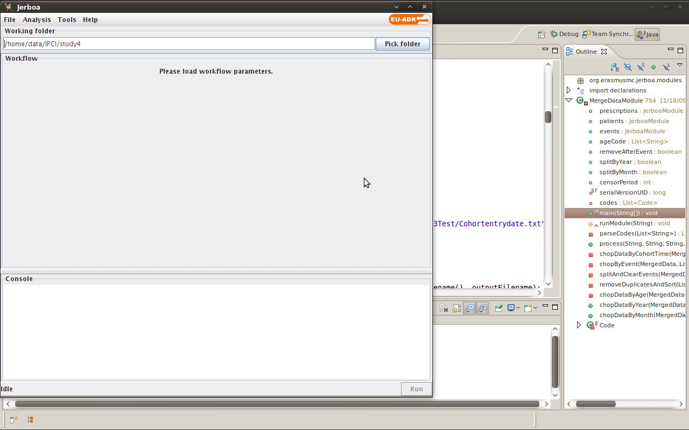

User Manual
EU-ADR internal document
Version 2.4
M.J. Schuemie
Table of Contents
1.Starting Jerboa 3
2.Using Jerboa 3
3.Input formats 3
3.1.Table: Prescriptions 4
3.2.Table: Events 4
3.3.Table: Patients 4
4.Tools 5
4.1.Test Input Files 5
4.2.Encrypt file 5
5.Setting files 5
6.Modules 5
6.1.TestInputFilesModule 5
6.2.AggregateModule 5
6.3.EventPrescriptionProfilingModule 6
6.4.EventExposureProfilingModule 6
6.5.CohortEntryDateModule 7
6.6.ExposureCodingModule 7
6.7.GiftWrapperModule 8
6.8.RelativeRiskModule 8
6.9.MergeAggregatedTablesModule 9
6.10.CombineConcomitantModule 9
6.11.FilterEventsModule 9
6.12.CaseSetModule 10
6.13.MergeDataModule 11
6.14.MergeRepeatPrescriptionsModule 12
6.15.FileInputModule 12
6.16.NonMedicationCodingModule 13
6.17.MergeByATC 13
6.18.AggregateByATCModule 13
6.19.IncidenceRateModule 14
7.Change log 15
Jerboa requires Java in order to run. You can download the latest version from:
Double-click on the Jerboa Jar file to start Jerboa. Alternatively, you can start Jerboa from the command line using:
java –jar Jerboa.jar
By default, Java allows each program to use a maximum of 128MB of RAM. Especially for larger data sets, Jerboa will run faster if it can use more memory. To give Jerboa 1024MB of RAM, use the following command:
java –Xmx1024m –jar Jerboa.jar
After startup, Jerboa will display its main screen, as shown on the right.
Here you must specify a valid folder on the hard disc where Jerboa can write the final and intermediate results, as well as several temporary files.
This shows the main workflow for processing the input data (specified in the section Input formats), using several processing steps (specified in the section M).
You can load a workflow using the Load workflow parameters option in the File menu.
This will show output generated by Jerboa during processing.
Executes the main workflow, and generates the encrypted file containing the aggregated data.
Three tables serve as input:
Prescriptions: Describes the prescriptions taken by patients.
Events: Describes the events.
Patients: Describes the patients included in the study.
All tables are in CSV (Comma Separated Values) format. The first row should contain the column headers. The order of the columns and rows is not important.
Tip: you can use the tool “Test Input Files” to test your input files!
All dates are formatted as follows:
YYYYMMDD
For example: the 4th of July, 2008, is formatted as:
20080704
A patient ID is an alphanumeric string that uniquely identifies a patient. So patient IDs can be numbers (1, 2, 3, etc.) or combination of numbers and letters (a01, a02, b01, etc).
Fields:
Date The start date of the prescription.
PatientID Patient ID.
Duration The duration (in days) of the prescription.
ATC The ATC code corresponding to the medication.
Fields:
PatientID Patient ID.
Date Date of the event.
EventType Type of event. This must be one of the currently supported events:
UGIB (Upper GastroIntestinal Bleeding)
AS (Anaphylactic Shock)
BE (Bullous Eruptions)
ARF (Acute Renal Failure)
AMI (Acute Myocardial Infarction)
RHABD (Rhabdomyolysis)
Fields:
PatientID Patient ID.
Birthdate Date of birth.
Gender Gender. Can be either F or M, for Female or Male respectively.
Startdate Date from which the patient is eligible to be included in the study.
This is typically the date the patient is entered into the registration sytem.
Enddate Date after which the patient is no longer eligible for inclusion in the study.
Jerboa offers tools for users. Currently, there are two tools:
This can be used to test whether the input files can be read by Jerboa. First select the working folder in the main window, then select ‘Tools’ and ‘Test input files’. Here you can specifiy the names of the input files.
It is possible to disable the test of particular files (for instance when you know they are ok). Uncheck the box labelled “Test this file”.
Click ‘Run’ to perform the test(s). When Jerboa encounters an error, it will show ‘Error’ for the particular file. To show the part of the input file containing the error, click on ‘Show’. If everything is ok, Jerboa will generate some statistics in the main console that can be used to verify if the data is not only formatted correctly, but also contains the correct data.
This workflow can be used to compress and encrypt a file using the public key. The resulting file can only be decrypted using the private key.
todo
Module for testing whether the input files adhere to the defined format.
prescriptions
patients
events
Aggregates data from a merged data file by age and gender, and optionally by calendar year and month.
mergedData
minSubjectsPerRow
(int) The minimum number of subjects in a row of the resulting
aggregated table. Rows with fewer subjects are deleted, and
deletions will be summarized in the last line of the table.
default
= 0
includeYear
(boolean) Create aggregates for each calendar year.
Warning: the
input table should be split by calendar year (i.e it should not
contain episodes spanning two years).
default = false
includeMonth (boolean) Create aggregates for
each calendar month.
Warning: the input table should be split by
calendar month (i.e it should not contain episodes spanning two
months).
default = false
prescriptions
patients
events
relativeRisks
dataPointCount (int)
relativeRisks
mergedData
dataPointCount
(int)
dataPointSpacing (int)
Calculates, based on the system entry and exit dates in the input patients file, the cohort entry and exit dates.
patients
followUpTime
(int) The default amount of follow-up time (i.e. number of days
between system and cohort entry date).
default = 365
maxDaysFromBirth (int) If the system entry
date is less than this number of days from the birthdate of the
patient, the cohort entry date is set to the birthdate.
default =
265
This module performs three functions:
The exclusive patient time of the input merged data file is converted to non-exclusive patient time (i.e. exposure to each drug is coded separately, indepent of any other drugs). The resulting merged data file will have at most 1 ATC code per row.
(optional) Exposure to a drug is split into various exposure episodes according to accumulated exposure.
(optional) The time after an exposure is coded separately.
mergedData
historyLength
(long) Number of days over which exposure to a drug should be
accumulated for assigning the exposure codes.
default = 365
enableExposureCoding
(boolean) default = false
enablePostExposureCoding
(boolean) default = false
exposureCode (List) The list of exposure codes used when exposure coding is enabled. Each code should be represented as three semicolon separated values:
The start number of days of accumulated exposure
The end number of days of accumulated exposure
The label of the code
For example: 0;7;VS
postExposureCode (List) The list of post
exposure codes. See exposureCode for the format. Post exposure code
labels should always start with the letter P.
Module for compressing and encrypting files.
input
outputFilename (String) Name of the output
file (relative to the working folder).
default = data.enc
Generates relative risks from the aggregated input data.
aggregatedData
atcLevel (int)
ATC level (number of characters) at which the analysis should be
performed.
default = 7
minEvents (int)
Minimum number of events to include a signal in the resulting
table.
default = 5
compareToSubATC
(boolean) Compare exposure to exposure to other drugs with the same
indication.
default = false
subATCLevel (int)
Specifies the ATC level for indications (for
compareToSubATC).
default = 3
outputStandardError
(boolean) Output the standard error in the resuls file.
default =
false
outputSorted
(boolean) Sort the output table by RRmh (will take a lot of memory
for extremely large numbers signals).
default = true
outputFilename (String) Name of the output
file (relative to the working folder).
default =
RelativeRisks.csv
Merges up to three tables into a single file, and will include the settings of the current workflow.
table1
table2
table3
outputFilename (String) Name of the output
file (relative to the working folder).
default =
AggregatedData.txt
Combines concomittant drug use into single episodes. After applying this method, there will be no overlapping episodes in the prescriptions table.
prescriptions
Filters the input event file for events of the event types specified in the types parameter.
events
types (List) The event types that are
retained in the events table.
Generates case sets for a case-control type analysis. For every case (event), controls are identified based on the index date, and a number of optional matching criteria.
mergedData
matchOnGender
(boolean) Specifies whether controls should have the same gender as
the case.
default = true
matchOnAge
(boolean) Specifies whether controls should be in the same age group
as the case (at the time of the event).
default = true
matchOnChronicDiseaseScore
(boolean) Specifies whether controls should have the same Chronic
Disease Score as the case.
default = false
matchOnDrugCount
(boolean) Specifies whether controls should have the same drug count
as the case.
default = false
outputYear
(boolean) Output the calendar year of the index date.
default =
true
outputMonth
(boolean) Output the calendar month of the index date.
default =
true
outputGender
(boolean) Output the gender of the cases and controls.
default =
true
outputAge
(boolean) Output the age group of the cases and controls.
default
= true
outputChronicDiseaseScore
(boolean) Output the Chronic Disease score of the cases and
controls.
default = true
outputDrugCount
(boolean) Output the drug counts for the cases and controls.
default
= true
outputCaseChronicDiseaseScore
(boolean) Output, for both cases and controls, the Chronic Disease
Score of the corresponding case.
default = true
outputCaseDrugCount
(boolean) Output, for both cases and controls, the drug count of the
corresponding case.
default = true
outputNumbers
(boolean) If set to true, for each drug the days of use and days
since use are added to the table.
default = false
outputFilename (String)
Merges patient, event, and optionally prescription data into one file. Optionally, the patient time is split by calendar year and/or month. Optionally, patient data after an event is censored. Patient time outside the patient cohort time is marked separately.
prescriptions
patients
events
ageCode (List) The list of age ranges used when coding patient age. Each range should be represented as three semicolon separated values:
The start year since birth
The end year since birth (exclusive)
The label of age range
For example: 0;5;0-4
removeAfterEvent
(boolean) Specifies whether patient time after an event should be
censored.
default = true
splitByYear
(boolean) Specifies whether patient time should be split by calendar
year. If set to true, no episode will span two years.
default =
false
splitByMonth
(boolean) Specifies whether patient time should be split by calendar
month. If set to true, no episode will span two months.
default =
false
censorPeriod (int) The number of days the
patient time should be censored after an event, if censoring is
enabled.
default = 999999
Merges repeat prescriptions with the same ATC code. A merged prescription will start at the start date of the first prescription, and end at the end date of the last prescription.
prescriptions
extentionMultiplier
(double) If a new prescription occurs within this fraction of the
original prescription duration after the prescription ended, the new
and old prescription are assumed to be repeats, and are
merged.
default = 0
extentionInDays
(int) If a new prescription occurs within this number of days after
the prescription ended, the new and old prescription are assumed to
be repeats, and are merged.
default = 0
addToDuration (int) Prolong each duration
with this number of days.
default = 0
Module that points to an input file.
filename (String) The path to the file,
relative to the working folder
Fills the patient time between cohort entry date and cohort exit date with non-exposure episodes.
prescriptions
patients
prescriptions
patients
events
ageCode (List) The list of age ranges used when coding patient age. Each range should be represented as three semicolon separated values:
The start year since birth
The end year since birth (exclusive)
The label of age range
For example: 0;5;0-4
removeAfterEvent
(boolean) Specifies whether patient time after an event should be
censored.
default = true
censorPeriod (int) The number of days the
patient time should be censored after an event, if censoring is
enabled.
default = 999999
Aggregates a merged data file at the level of unique values in the ATC field.
mergedData
minSubjectsPerRow
(int) The minimum number of subjects in a row of the resulting
aggregated table. Rows with fewer subjects are deleted, and
deletions will be summarized in the last line of the table.
default
= 0
includeYear (boolean) Create aggregates for
each calendar year.
Warning: the input table should be split by
calendar year (i.e it should not contain episodes spanning two
years).
default = false
Generates incidence rate tables from the aggregated input data.
aggregatedData
referencePopulationFile
(String) Specifies the path to the file containing information on
the reference population, for calculation of the standardized
incidence rate.
referencePopulationType (String) Specifies the type of reference population:
none - do not calculate standardized IR
perAge - specified by age only
perAgeGender - specified by both age and gender
referencePopulationSubgroups (List) Specifies any subgroups to be identified for calculation additional standardized rates. Each code should be represented as two semicolon separated values:
The label of the subgroup (the same label can be used in multiple rows)
The age range
For example: children;0-5
postFix (String)
Specifies the string that will be added to the age ranges in the
output table so Excel does not mistake age-ranges for dates.
default
= years
perNYears (int)
Incidence rates are divided by this number of years.
default =
100000
outputFilename (String) Name of the output
file (relative to the working folder).
default =
IncidenceRates.csv
Changes made in Jerboa over time:
|
1.1 1.2
1.3
1.4
1.5
1.6 1.7 2.0 2.1 2.2
2.3
2.4 |
Added module for calculation of cohort entry date. Added command line interface. Added inclusion of higher aggregation tables. Added filter on number of subjects per line in aggregated table. Multiple patient entries with same patientID allowed (for patient leaving and returning to population) Extended error messaging when reading input files Added ‘Test input files’ tool. Added Busy signaling (‘Working..”) Input file headers are now case insensitive. Added calendar year support Added Relative Risk calculations Added report of deleted data to aggregated file Changed the project logo More efficient support for exposure coding Support for multiple event types Workflow layouts are no longer hard-coded but part of the workflow layout Post exposure coding added Added flexible censor periods Added calendar month support Redesign of underlying framework. Parameters can only be edited in the settings file. Display is now auto-generated Timestamping option added. Event profiling for LEOPARD method added. |